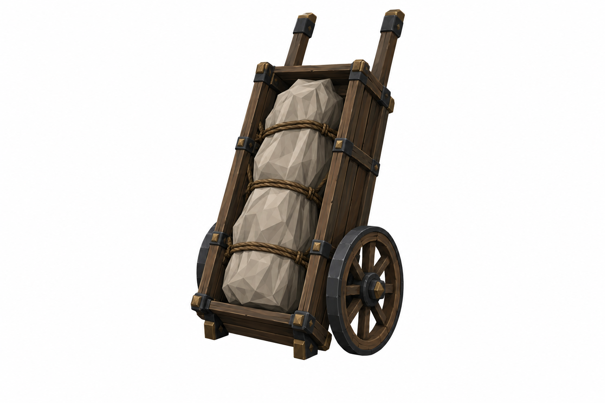
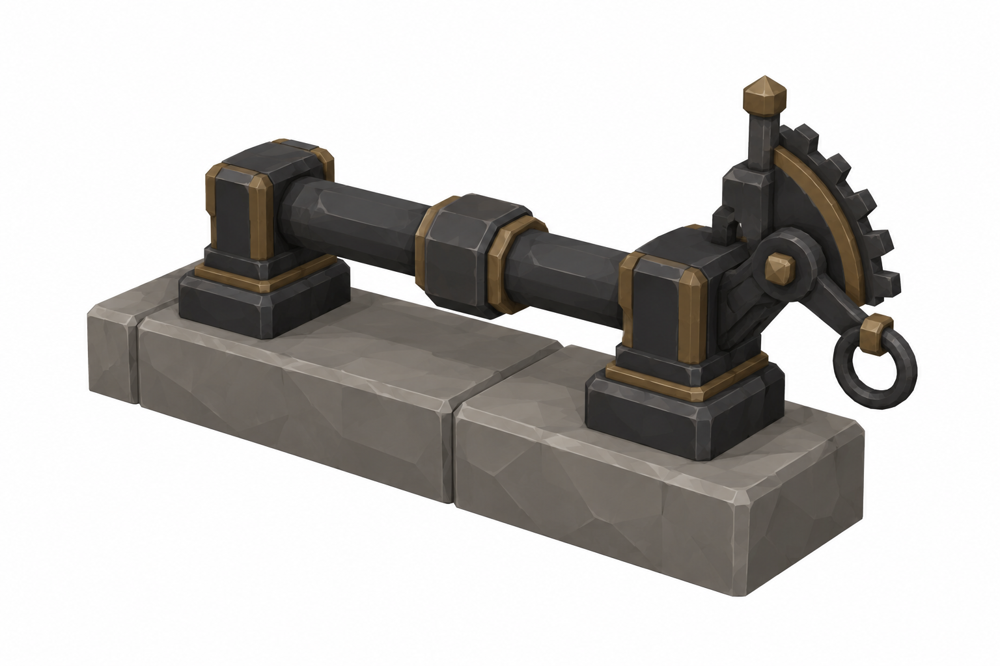
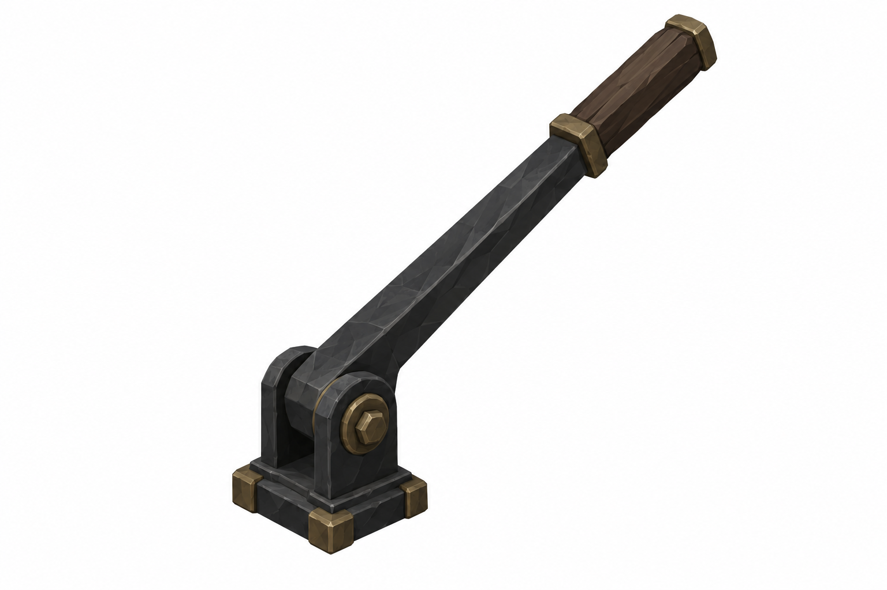
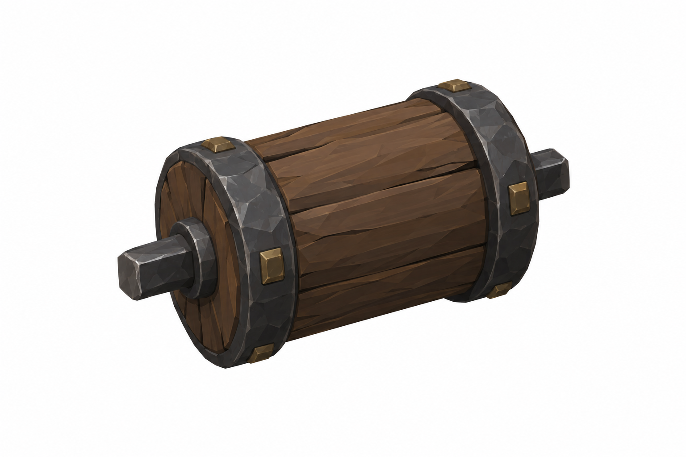
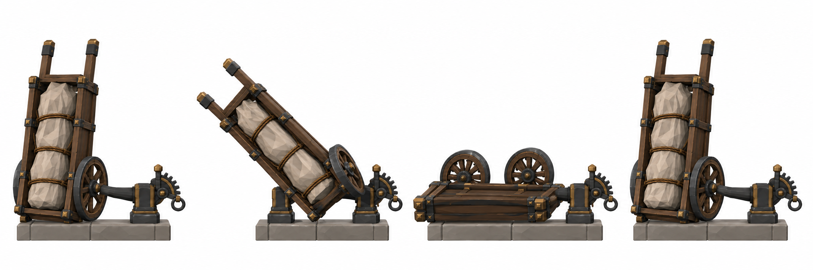
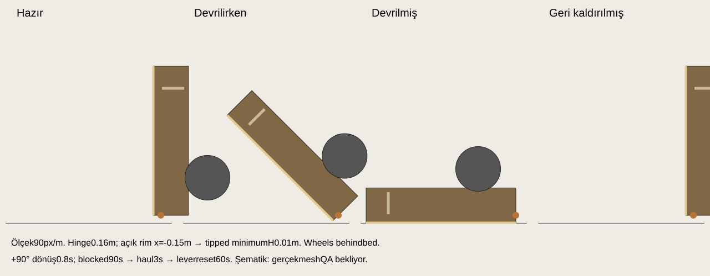

Yeni taslaklar kullanıcı ve Mustafa onayı bekliyor. Hedef ölçüler aşağıda; görsel oranları yaklaşık, mesh-fit ve oyun içi uygunluk kontrolü bekliyor. Tripo üretimi yok.
Ölçüler, kaynak yorumlar ve korunan kararlar · Üretim kayıtları

3.0 m uzunluk × 1.2 m genişlik; dik toplam H3.16 m. İki ahşap tekerlek, tek aks, demir çember. Açık yüz ringe bakar; E3 statik kopya aynı kaynaktır.
Üretim promptu
Statik cradle 0.5 × 1.3 × 0.16 m. Hinge ratchet ve stop pin; pivot local (0,0.16,0).
Üretim promptu
Ayrı 0.7 m kol (P); grip H≈1.2–1.4 m, pulled angle35° (P).
Üretim promptu
Ayrı dönen tambur Ø0.3 m (P); wood/forged iron, eksen ve soket uyumu sonra kontrol edilir.
Üretim promptu
0.8s tip, 90s block, 3s haul, 60s lever reset. Yüzüstü durumda wooden underside üstte, wheels up. v002 face-up olduğu için superseded.

Kol/tambur bağlantı ve mesh-pivot uygunluğu sonra doğrulanır. E3 aynı Cart dosyasını static kullanır.